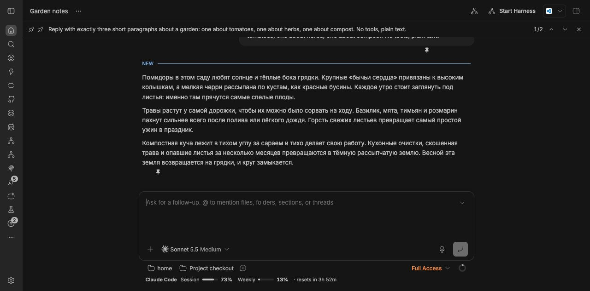
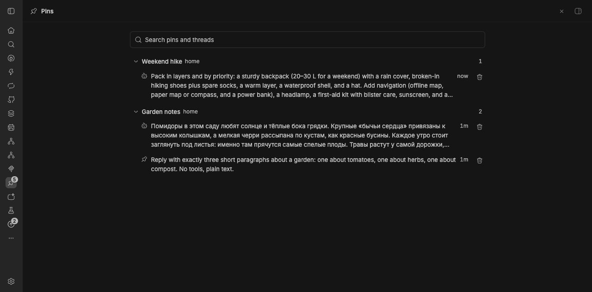

Pins — плагин для BB. Закрепите нужные сообщения — свои или агента — и возвращайтесь к ним в один клик: панель закрепов висит над тредом, а все закрепы по всем тредам собраны на отдельной странице в боковом меню.
BB 0.50+ · MIT · данные только локально
Кнопка Pin у любого сообщения. Закрепить можно несколько, повторный клик снимает.
Над тредом видно закреп, счётчик 2/5 и стрелки. Клик по тексту прокручивает к сообщению. Без закрепов панель места не занимает.
Пункт Pins в навигации bb: закрепы всех тредов по группам, поиск, бейдж с числом закрепов.
Список закрепов всех тредов с поиском и фильтром «This thread».
Открывает нужный тред и прокручивает к сообщению, даже если оно далеко в истории.
Закрепы лежат в базе плагина на вашем сервере bb, вместе с копией текста. Ничего не уходит наружу.


Исходный код и релизы, лицензия MIT